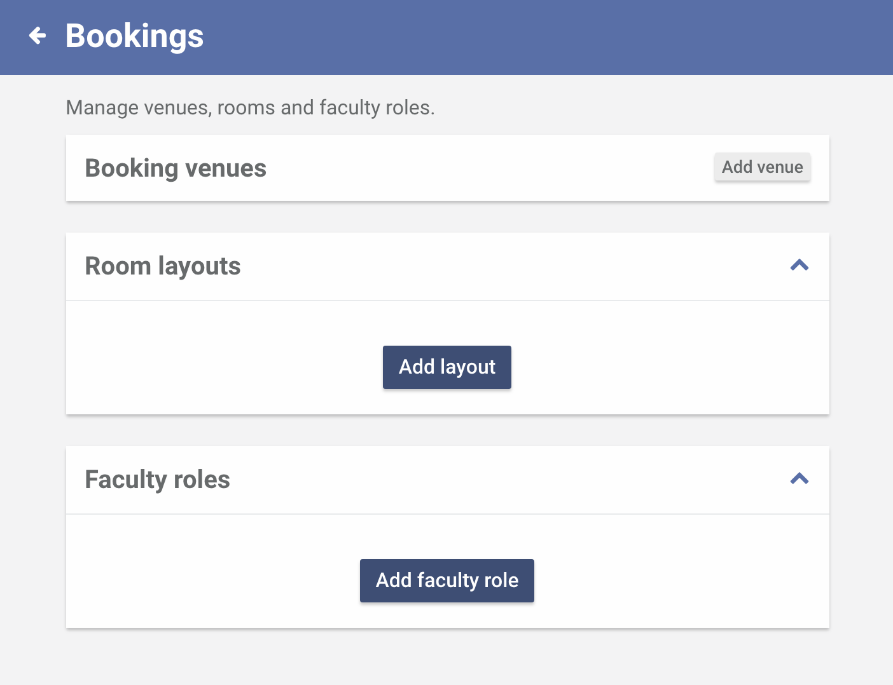
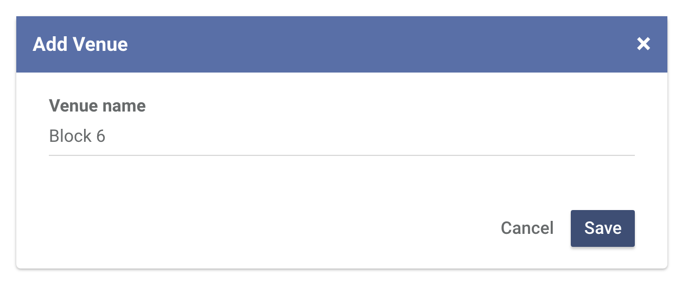
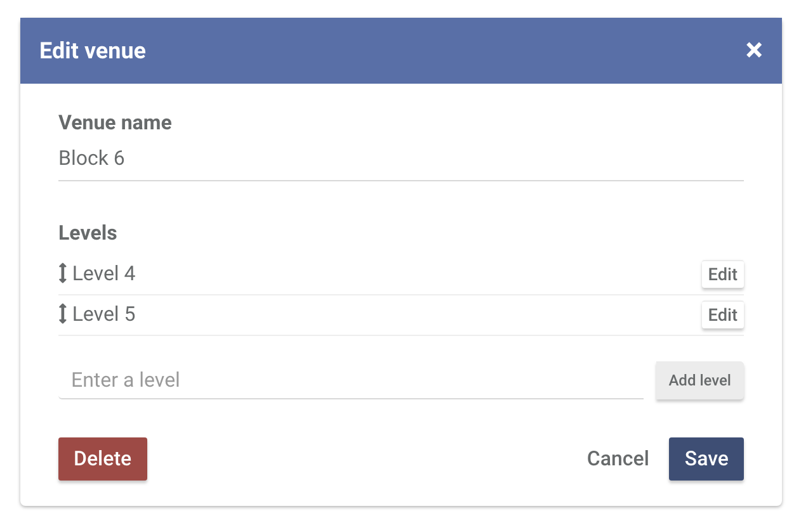
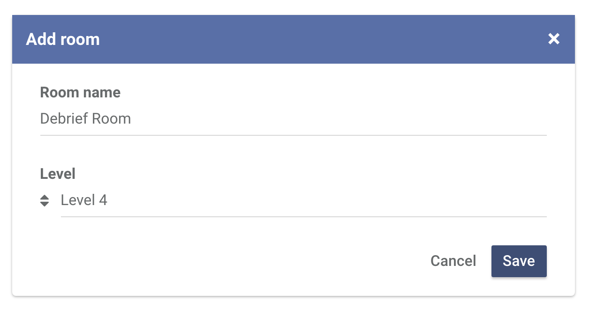
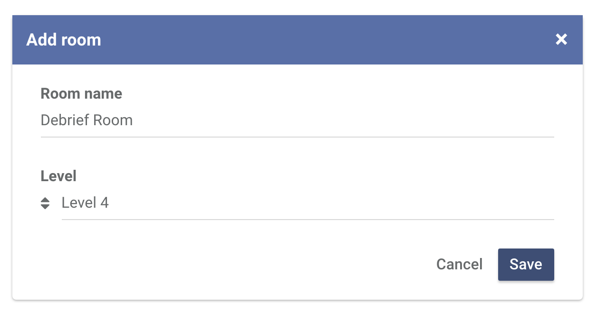

Setting up your Pocket Centre
In order to get your Central up and running, you would need to configure Central to work better for you.
-
Head over to the Settings page
You can find the Settings menu item at the bottom of the left sidebar.

-
Click Bookings
The Bookings section will allow you to add rooms, room layouts and faculty roles.
 -
Adding a venue
Before you can add rooms, you need to define venues and levels first. A venue can be likened to a building. To add a venue, click Add venue

Enter the venue name and click Save.
 -
Adding a level
Within a venue is a level. A level can be likened to a floor where rooms can be found. To add a level in a venue, click Edit.

Enter the name of the level and click Add level.

You can add more levels by repeating the process.
Once you are done entering the levels, click Save.Note: The order in which the levels appear across the system can be changed by dragging and dropping them to your preferred order using the double-headed arrow icon besides each level.
 -
Adding a room
A room is where you can attach a booking against. To add a room, click Add room.
 

-
…and you're done!
You will now be redirected to the booking profile page where you can add rooms, manage participants, add faculty and so much more.